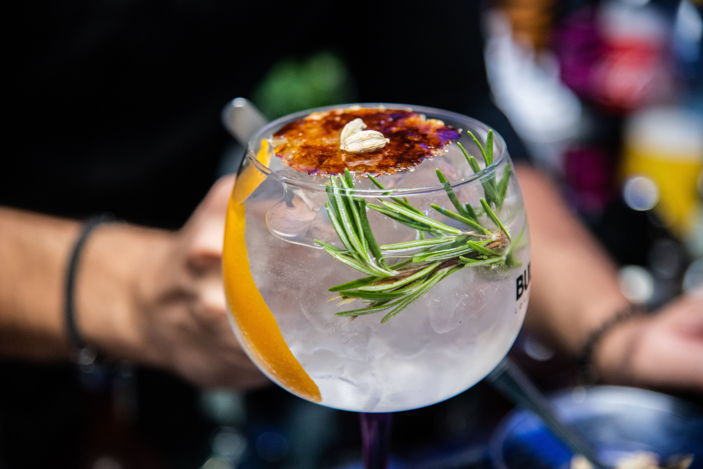
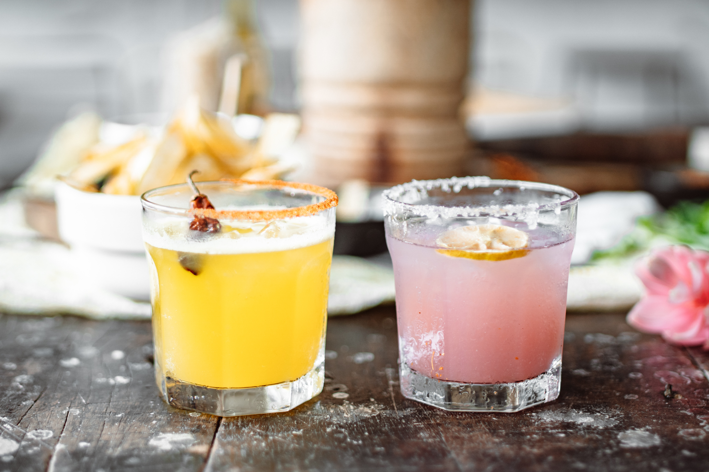

Welcome to my 'at home cocktail bar'! Here I will give you recepies of some lovely drinks you can make at home. For the times you want something easy and tasty, as well as when you want to impress your friends.

Drinks for a hot summers day or maybe as a comfort on those cold and dark winter evenings, whichever you feel fit we have drinks for all the moments. All you need is a glass, some ice, perhaps a shaker and you're ready to get started for some fun!